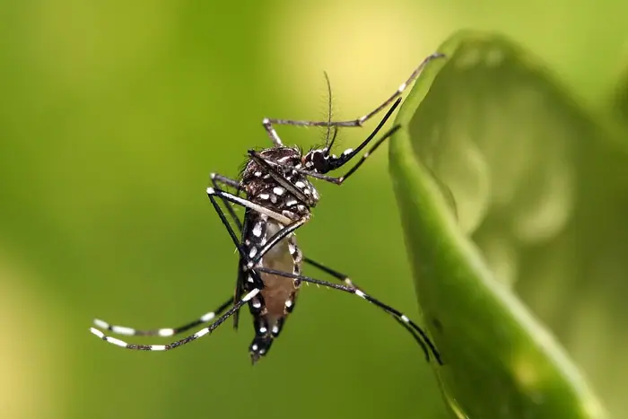

Dengue-carrying mosquitoes expand their reach into new territories – including Florida

Introduction
Dengue-carrying mosquitoes expand their reach into: The Conversation
Background & context (from research brief)
<p>On <time datetime="2026-09-18">September 18, 2026</time>, Google quietly pushed the latest Android 17 QPR2 Beta 5 build to the Pixel lineup via the standard over‑the‑air (OTA) mechanism that Pixel phones use for system upgrades. The update arrived automatically on all eligible devices—Pixel 7, 7 Pro, 8, 8 Pro, 9, 9 Pro, 9 T, 10, 10 Pro, 10 a, 11, 11 Pro, 11 a, 12, 12 Pro, 12 a, 13, 13 Pro, 13 a, 14, 14 Pro, and 14 a—without requiring manual downloads or external tooling. Users can simply tap the notification in Settings → System → Advanced → System update to install the new beta with a single tap.¹</p>
<p>Because the Pixel series is the flagship platform for Android releases, Google leverages it to test new features, performance tweaks, and security patches in a controlled environment. The QPR2 Beta 5 build is part of a broader strategy to involve the community in spotting regressions and performance issues before the final stable release of Android 17. By enrolling all eligible Pixel devices automatically, Google ensures that the beta is tested on a wide range of real‑world hardware configurations, from the mid‑range Pixel 7 a to the flagship Pixel 14 Pro.²</p>
<p>Android’s beta program is designed to give early access to developers and enthusiasts while keeping the experience smooth for end users. When a new beta build is released, Google pushes it to all devices that meet the hardware criteria. Users who have opted into the beta program receive the update automatically, just like any other OTA update. Those who have not opted in can still download the beta via the Android Studio SDK or the Android Preview channel and install it manually, though this requires a bit more technical know‑how.³</p>
<p>Opt‑in is simple: open Settings, tap System, then Advanced, and select “System update.” If the “Beta” toggle is on, the device will automatically download and install any available beta builds. Google also provides a “Beta program” page on the Android Developers site where users can manage their enrollment and view release notes for each build. The QPR2 Beta 5 release notes highlight a handful of bug fixes, stability improvements, and performance tweaks, but Google has not announced any new features or API changes at this time, following its usual practice of keeping the beta incremental.⁴</p>
Why it matters
The development was reported by The Conversation on Sep 19, 2026 as part of today's news cycle.
Source & further reading
This page aggregates the headline and context; the full original report is linked in the source panel below. Topic keywords: dengue-carrying, mosquitoes, expand, their, reach.